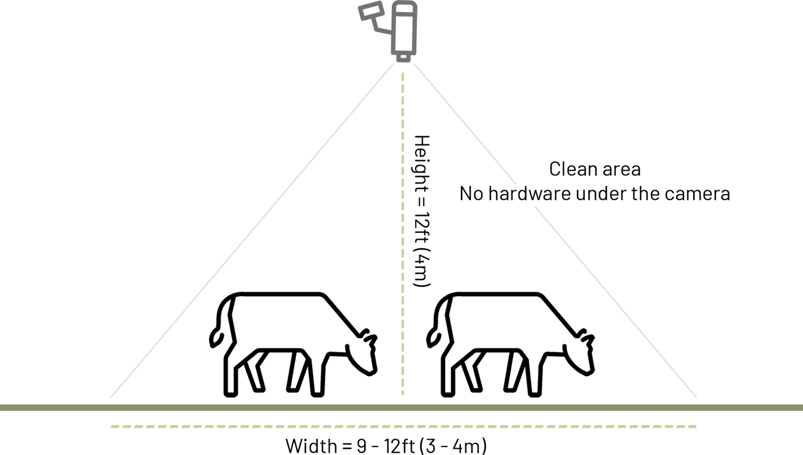

We provide a completely hands-free way to monitor your cows welfare and performance.
The camera captures video footage of each cow as it leaves the milking parlour. We also pull in ID information if available from your sort gate or RFID system.
Artifical intelligence algorithms in the cloud analyse the footage to uniquely identify the cows and monitor welfare and an increasing number of other behaviours.
We then deliver these insights right back to your smartphone and/or integrated with your farm's herd management system saving an average farmer £350 per cow per year.

The camera captures video footage of each cow as it leaves the milking parlour. We also pull in ID information if available from your sort gate or RFID system.
Artifical intelligence algorithms in the cloud analyse the footage to uniquely identify the cows and monitor welfare and an increasing number of other behaviours.
We then deliver these insights right back to your smartphone and/or integrated with your farm's herd management system saving an average farmer £350 per cow per year.